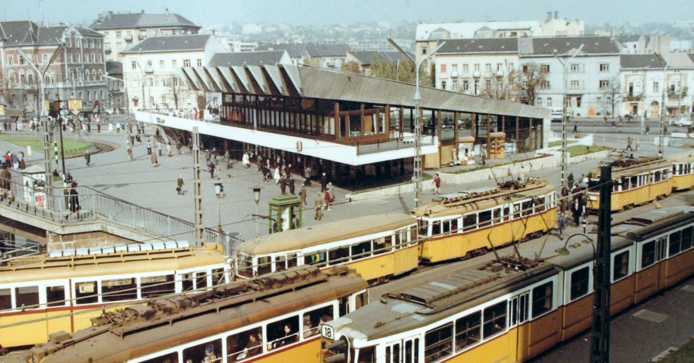
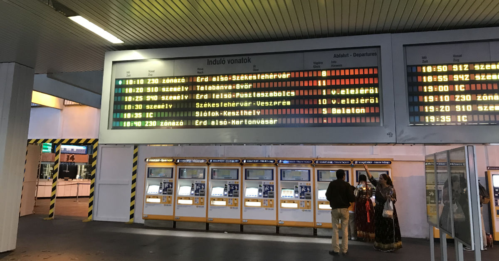
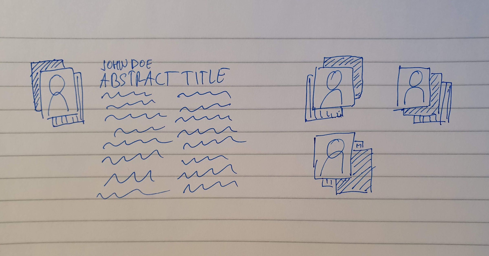
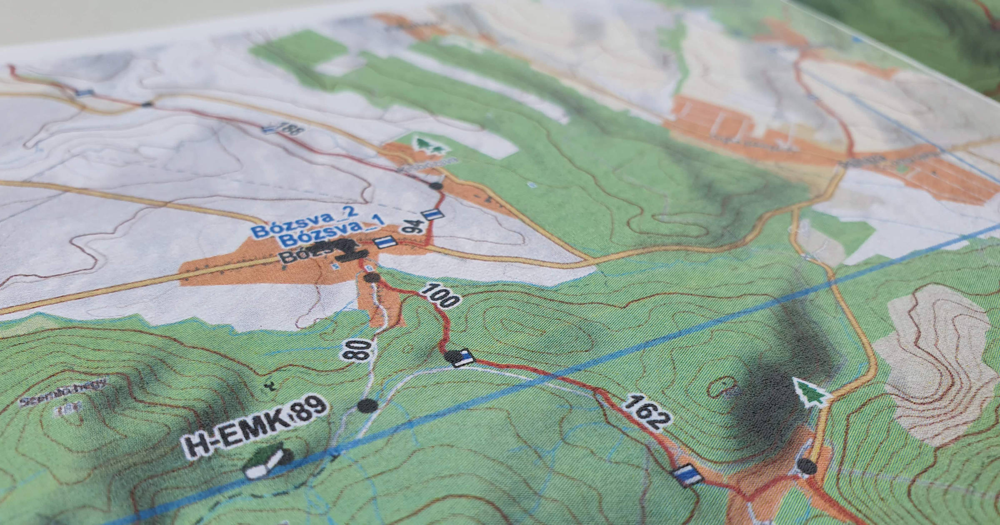
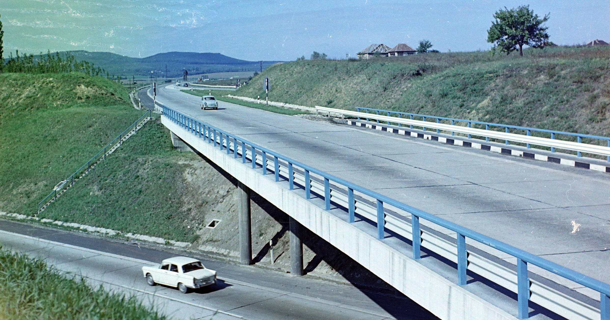
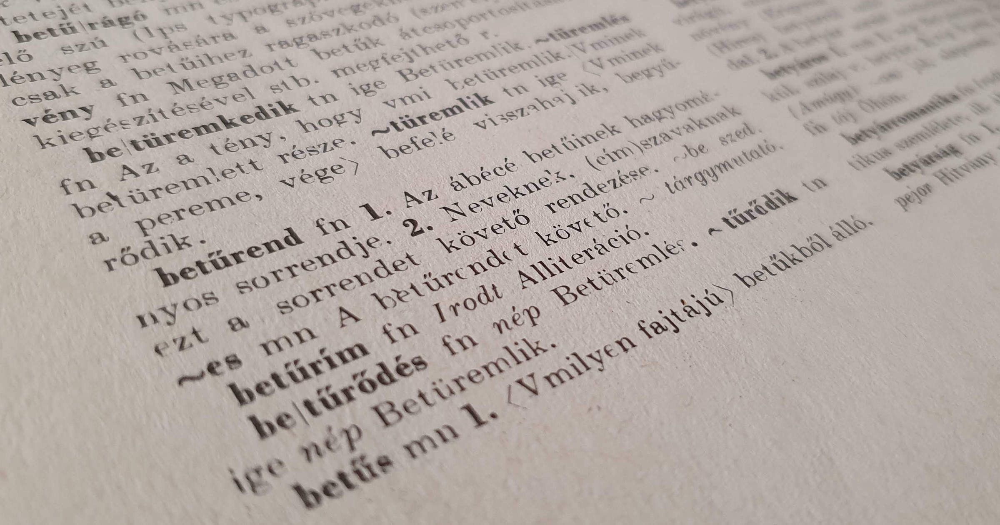
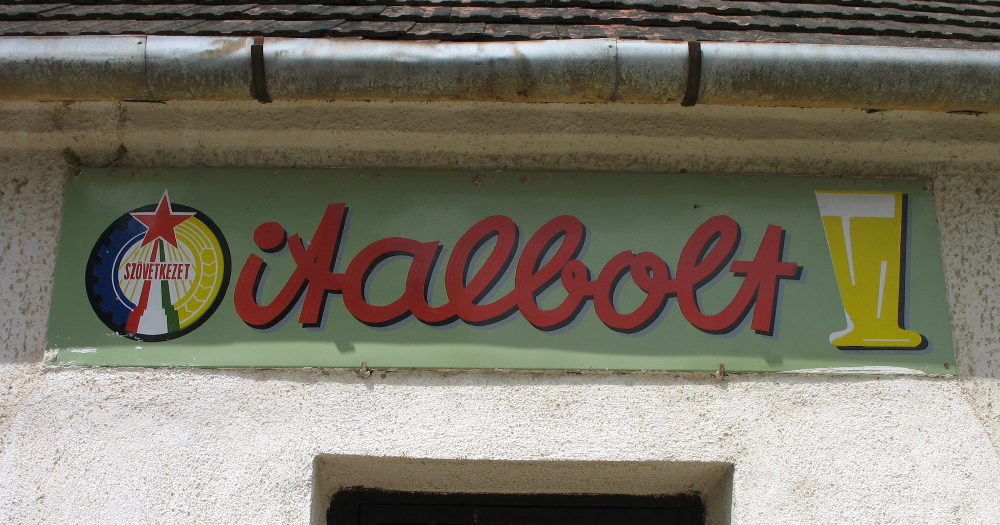
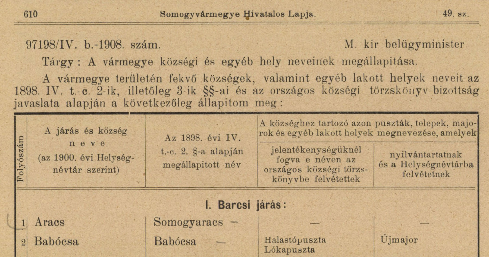
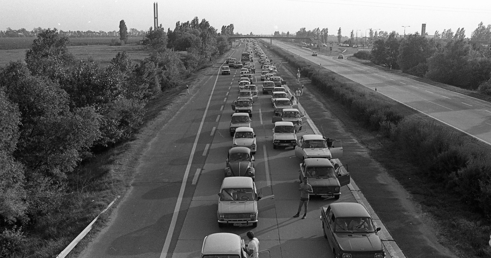

-
Graphing Construction on Tram Line 6 in Budapest
June 30, 2020In this article I explore a method to visualize linear spatial data that changes over time: which segments of tram line 6 of Budapest were under construction at which points in time? This investigation is inspired by a video posted on Index.hu and a 140-year-old train schedule diagram.
Comments | Keep reading »
-
Get Public Transport Timetables
May 25, 2020About two years ago, I shared an article about a project where I query and process results from the Google Transit API in a way that provides a simple overview for public transport connections between two places. Since I ended up using it rather frequently, I decided to turn it into a proper Python package, called gptt, available on GitHub and PyPI.
Comments | Keep reading »
-
A first endeavor into generative art
April 17, 2020Last year we organized an internal conference at my workplace and I volunteered to put together a booklet with the abstracts of the presentations. I wanted to add photos of the authors, but I did not want them to look all the same.Actually, graphic design and layout editing was not new to me, I’ve always had a thing for this field. At some point during my bachelor’s in Economics I even considered moving abroad and studying it instead of finishing that degree. Instead of doing so, I just volunteered to design the faculty magazine. I came up with the idea to have the photos on top of two rectangles of the same size but of two different colors, a bit offset from the photo – every photo should be paired with differently offset rectangles to add some unique design. Of course, I did not want to do this by hand, but that’s what I know Python for.
Comments | Keep reading »
-
Introducing gpxslicer
January 28, 2020I have recently released my first Python package,
gpxslicer, a simple tool to cut GPX track logs into smaller segments. It is now available on GitHub and PyPI. The motivation behind creating it was simple: I wanted to automate tasks that I had done by hand too many times.
Comments | Keep reading »
-
Understanding Overpass, the API of OpenStreetMap
January 17, 2020If you want to use spatial data from OpenStreetMap, OpenStreetMap is more than just a free map: it is also a free database of global geographical data. If you are not familiar with it, check out its Wiki to learn more. one way to get it is via Overpass, Read more about the Overpass API and its various endpoints here. a read-only API of the OpenStreetMap database. While the API is extremely flexible, its unique language, Overpass QL is not very intuitive. This article takes a very simple query and dissects it into its smallest pieces. This will help you understand (and write) such queries.
Comments | Keep reading »
-
Alphabetical sorting is hard
November 24, 2019It really was a great idea. As usual, I took a problem that I randomly ran into and wanted to find a solution to. I was not sure if I could implement the solution, but I knew I could describe it. It happened when I was working on a project where I got some data about municipalities in Hungary. I thought it would be handy to sort them alphabetically so that the user of the final product can easily find the place they are interested in. However, due to the unusual letters in the Hungarian alphabet, such as ő or gy, collation is not trivial. But I knew I could find a way to solve this!
Comments | Keep reading »
-
The autumn of 1929 – the story of two hikes
October 29, 2019 | Hungarian version / magyar változat »I was going through the documents of my great-grandfather, Lajos Frenyó when I found a couple of folded papers in one of the notebooks. I had already known that he really liked hiking but I did not have any material proof of this hobby apart from the photo used as the cover image of this post. That is, up until that moment, because these papers contained a very detailed account documenting two trips in the Tatra mountains. This post contains these two reports with my comments.
Comments | Keep reading »
-
EXPECT A HAPPY HOBBY
December 2, 2018Do you know what a COYOTE TOOTHACHE and a CHECKBOOK PHOTOCOPY have in common? If written in uppercase, all the letters of these expressions appear in the Cyrillic alphabet. That is, if we take a more relaxed definition of letters being the same shape: in many typefaces, K and К and Y and У do not look the same, just very similar. Although, to be precise, if somebody would try to read these using the Cyrillic alphabet, they would read “souote tootnase” and “sneckvook rnotosoru”, respectively.
I started thinking about this when I realized that I had never seen a Russian license plate with letters that do not also appear in the Latin alphabet. So I started to wonder about two things: is this observation true in general? If so, what words could we make up that would consist only of such letters?
Comments | Keep reading »
-
Nicely formatted transit schedules
August 18, 2018I enjoy hiking, which most of the times involves using public transportation to get to the start of my hike and to get back home. Planning these trips used to be a major chore in Hungary before 2016, as there was no unified schedule database: one could only plan trips by train or bus, not together. During these times I came up with a timetable format in which I manually collected transit options using the bus and train planner websites as well as a map to came up with potential routes. These days transit information is available via the Google Directions API, so I decided to revisit this format and I developed a script that creates it automatically.
Comments | Keep reading »
-
Sunrise, sunset
March 8, 2018I grew up in Budapest and moved to the Netherlands a few years ago. I could not ignore the fact that the Sun has very different patterns: it rises later and sets later here than in Budapest. However, this difference is not uniform: my feeling was that the sun rises much later and sets about the same time during the winter. I saw the inverse in the summer: Dutch summer evenings are much longer, but dawn does not lag behind that much. I wanted to verify this feeling in a scalable manner, so I created a website (code here) where you can pick two arbitrary locations on the globe and see a graph with their dawn/dusk times through the year.
Comments | Keep reading »
-
Where have the camels gone?
November 30, 2016teveclub.hu used to be one of the most well-known websites among Hungarian teenagers. It is a Neopets clone where you can raise your own camel: feed it, and teach it various tricks day by day. I had the feeling that the site was slowly dying. I used data from archive.org to verify this hypothesis and I found that it was true: the total number of camels in the system has dropped from the ~320 thousand peak in 2006 to less than 26 thousand in 2018.
Comments | Keep reading »
-
Grab a drink while you wait for the bus
August 20, 2015I always found it fascinating that there are several bus stops in Hungary which are called “{municipality name}, Cooperative Liquor Store” (szövetkezeti italbolt in Hungarian). It might get somewhat lost in translation that such a name very much reminds the reader of the socialist era it was given to the bus stop.
Comments | Keep reading »
-
Hungarian municiaplity name prefixes
August 6, 2015Hungarian municipalities have unique names that consist of one (potentially compound) word. This was not the case until the end of the 19th century: multiple villages could have the same name, sometimes even in the same county. This caused trouble not only for the postal service but also related to taxation and conscription. Hence the standardization: every name must be unique; in case of a duplcate, the municipality names got a prefix based on their general location. I investigated these prefixes: their spatial distribution and the origin of those names.
Comments | Keep reading »
-
Bad idea of the day: toll on M0, the ring road around Budapest
December 11, 2014An article published yesterday in Népszabadság reveals that the Hungarian budget for 2015 includes a proposal to introduce tolls on several motorway segments that are toll-free today. To me, this sounds like a bad idea.
Comments | Keep reading »
-
How far up does the tram go?
November 25, 2013
Historically, there were three relatively hilly tram lines in Budapest: 58, 59, and 61. Service on line 58 has been suspended since 1977. In this case, “suspension” includes the tracks having been removed and paved over. Based on this, I do not think service will restart anytime soon. But how far up do these actually go? And which one is the steepest?
Comments | Keep reading »
-
Revolutionary street names
March 15, 2013Every Hungarian knows that almost every village in the country will have a street named after Lajos Kossuth, revolutionary and politician, and another named after Sándor Petőfi, an emblematic hero-poet – both of whom took part in the Hungarian Revolution of 1848. But where exactly are these streets?
Comments | Keep reading »
- That's all – there are no more posts.
Hello!
Hi, I am András Hann. Born and raised in Budapest, I currently work as a Data Scientist at Booking.com in Amsterdam.

Me in the Cuha gorge during the last day of hiking the 297-kilometer-long Central Transdanubian Red trail in Hungary on December 26, 2019.
This website is not a frequently updated blog; I use it to showcase personal projects that I work on in my free time. You can get in touch with me by sending an email to [andras at this domain] or via LinkedIn. You can also follow me on Medium.
Subscribe to my mailing list to receive an email when I publish a new post: